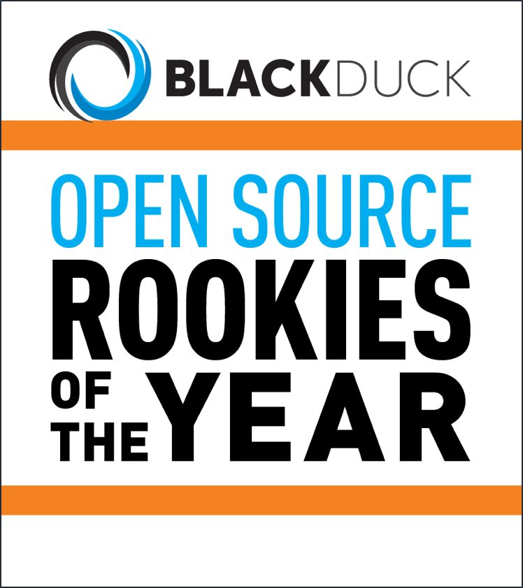

<main class="bs-docs-masthead" id="content" tabindex="-1">
  <div class="container">
    
    <p class="lead">A single, configurable, easy to use dashboard to visualize near real-time status of the entire software delivery pipeline.</p>
    <p class="lead"><a href="https://github.com/capitalone/Hygieia/archive/master.zip" class="btn btn-outline-inverse btn-lg" onclick="ga('send', 'event', 'Jumbotron actions', 'Download', 'Download {{ site.current_version }}');">Download source code</a></p>
    <p class="version">Currently v {{ site.current_version }}</p>

  </main>

  <div class="bs-docs-featurette">
    <div class="container">

      <h2 class="bs-docs-featurette-title">One Dashboard for the entire CI/CD pipeline</h2>
      <p class="lead">Pronunciation: hi-gee-ya (origin Greek)</p>
      <hr class="half-rule">

        <p class="lead">
          <a href="https://www.openhub.net/p/Hygieia" target="_blank">
            
          </br>Hygieia was awarded the prestigious BlackDuck Open Source Rookies of the year Award 2015</a></p>
          </hr>


        </br>
          <p class="lead">
            </br>
            <a href="https://www.youtube.com/watch?v=WuPQOBMmzSE" target="_blank"></a>
        </p>


      <hr class="half-rule">

      <p class="lead">Hygieia is a open source project hosted on Github by Capital One</p>
      <a href="{{ site.repo }}" class="btn btn-outline btn-lg">View on Github</a>
    </hr>
    </div>
  </div>
